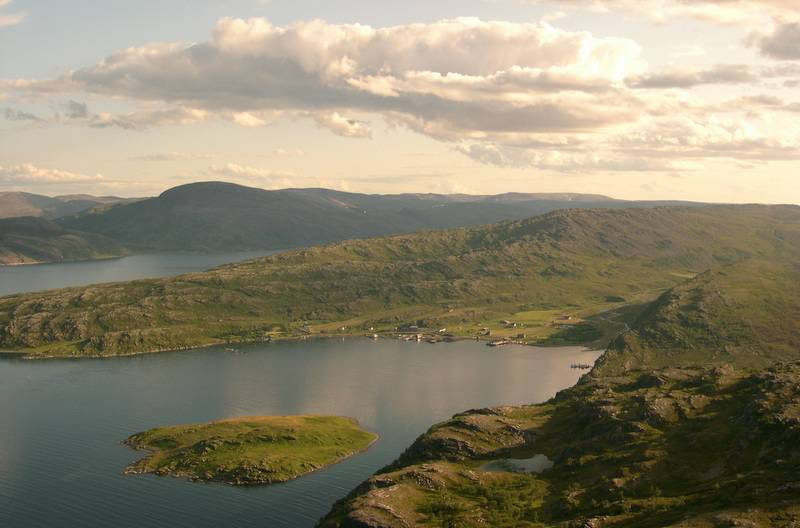

Kultuurilis-ajalooline väärtus omistatakse traditsioonilisele kultuurmaastikule, milles on suures osas säilinud asustusstruktuur ja teedevõrk, samuti paikadele, mis on seotud muistendite ning ajaloosündmustega. Väärtust lisavad erinevatest ajajärkudest pärinevad üksikelemendid. Objektide väärtus sõltub nende olukorrast ja sellest, kui haruldased või iseloomulikud on need piirkonnale.
Puhkemajandusliku väärtusega maastik on vahelduva reljeefi ja taimestikuga. Seal on esindatud nii metsakooslused, veekogud kui ka vaatamisväärsused. Väärtuse olemasolu eelduseks on hea ligipääsetavus.
Esteetiline väärtus on olemuselt subjektiivne, sest põhineb täielikult inimeste arvamusel. Maastike hindamisel arvestatakse selle ilu, mitmekesisust, hooldatust ja omapära.
Identiteediline väärtus on aladel ja objektidel, mis on kohalike elanike jaoks olulised.
Loodusliku väärtusega maastikul leidub rohkesti väärtuslikke elupaiku, kaitsealasid, puhtaveelisi veekogusid, põlismetsasid ja pool-looduslikke kooslusi. Seal võib olla looduslikke või looduslähedasi elemente nagu näiteks rändrahnusid, karstivorme, paljandeid, alleesid ja põllusaari.
